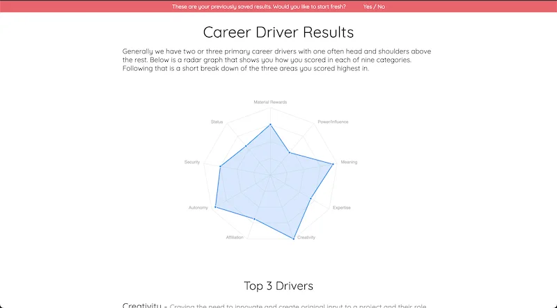

An interactive assessment app to develop your primary career drivers - built with React.

After taking the Career Drivers assessment on a paper print out a while back, I decided the basic implementation had too much participant work. The assessee or assessor had to do various calculations to work out the different scores and the data was always hard to convey visually.
I have modernised the assessment visuals and fully automated the calculation process. Once the assessment is complete, the results are displayed in graph format with various pieces of information about the results displayed.
The MVP was complete in April 2021 and I hope to soon introduce significantly deeper analysis, the ability to send an email of your results and more detailed insights into the outcome.